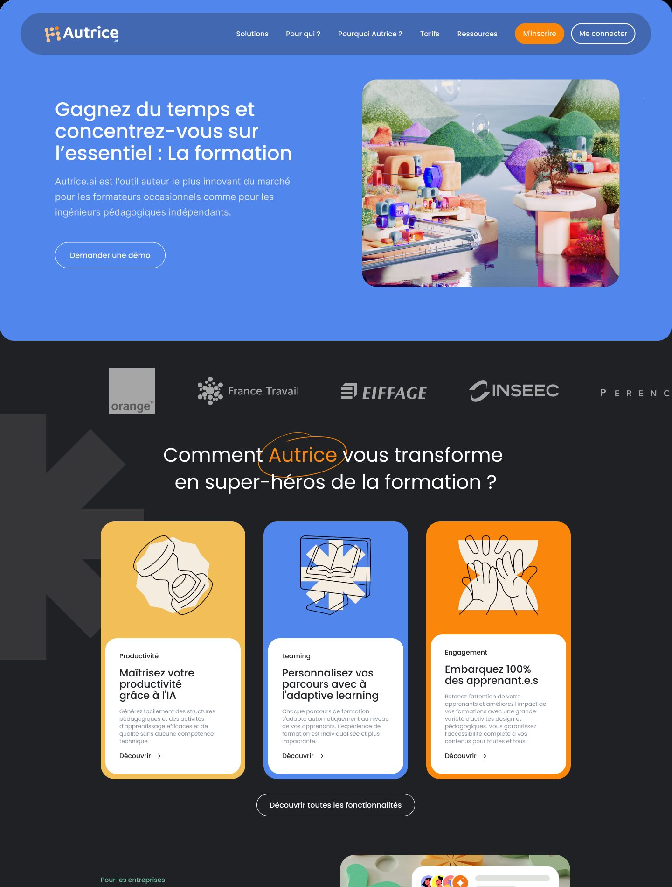
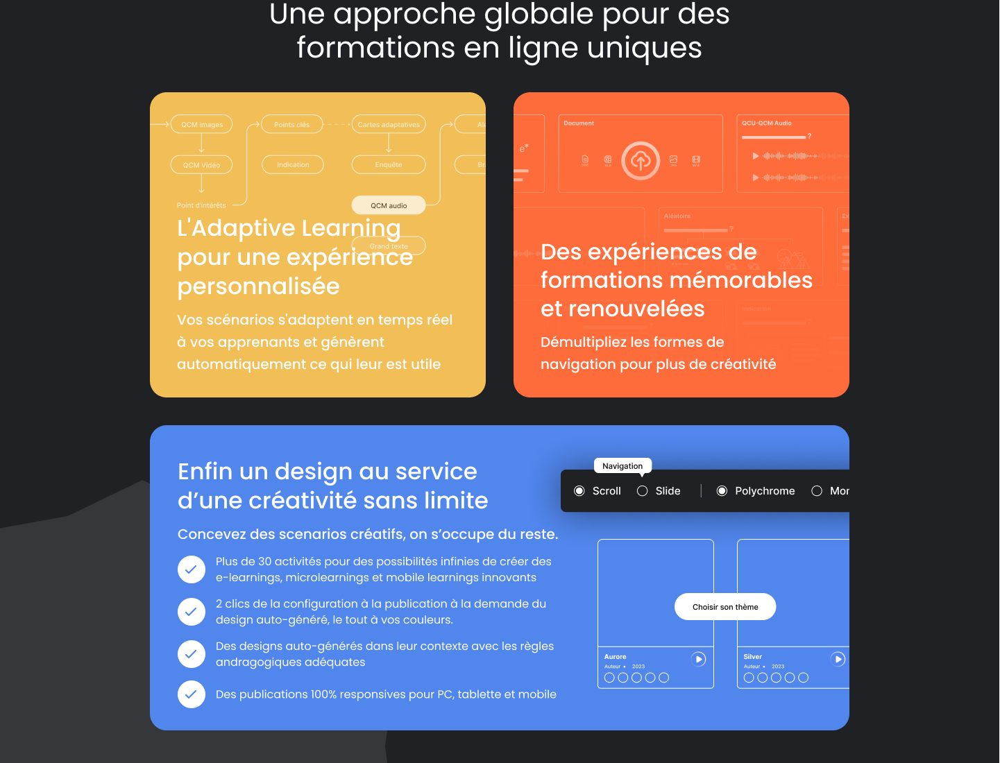

Concevoir le point d'entrée d'un nouvel outil SaaS de création de formations par IA, en maximisant la génération de leads qualifiés via une structure orientée conversion et une continuité stricte avec le Design System du produit.
Autrice.ai
Product Designer Senior
(UX, UI, Design System)
SaaS B2B / Landing Page
Acquisition & Conversion
Learning & Development
Intelligence Artificielle
Autrice.ai, une solution B2B exploitant l'intelligence artificielle pour générer et structurer des parcours de formation (Learning & Development).
Le marché B2B de la formation est souvent sceptique face à l'IA (crainte de la complexité ou de la substitution humaine). Le principal point de friction n'est pas le prix, mais la confiance.
La landing page ne devait pas être une simple vitrine, mais un funnel de conversion capable de déconstruire les biais cognitifs liés à l'IA, de rassurer l'utilisateur et de générer des demandes de test.

L'approche a consisté à traiter cette page comme une extension du produit lui-même, en appliquant des logiques de divulgation progressive (Progressive Disclosure).
Structuration de la page en entonnoir : accroche centrée sur le bénéfice primaire ➔ réassurance immédiate (preuve sociale) ➔ déconstruction des fonctionnalités sous forme de "Bento UI" pour faciliter la lecture rapide (scannabilité).
Pour contrer l'aspect abstrait de l'IA, l'interface intègre un équilibre strict entre des abstractions visuelles (composants UI, graphiques) et des photographies d'équipes en situation de collaboration. L'IA est positionnée comme un "copilote" et non un remplaçant.

Au lieu de créer une identité visuelle isolée nécessitant une nouvelle base de code, la landing page a été conçue comme une extension directe du produit SaaS, assurant une cohérence absolue tout au long du parcours utilisateur.
Déclinaison stricte des variables du produit (palette de couleurs B2B, hiérarchie typographique, élévations) vers l'écosystème d'acquisition. Côté intégration, cela permet aux développeurs de réutiliser exactement la même architecture CSS (ou framework) que pour l'application SaaS.
Les composants hérités de l'interface produit ont été adaptés en blocs modulaires (Hero section, Bento features, FAQ). La structure "Bento UI" a été spécifiquement pensée pour s'intégrer nativement via des logiques de CSS Grid et Flexbox, anticipant le comportement responsive sans générer de complexité front-end.
Le même système de composants a été décliné pour l'équipe marketing : gabarits de présentation et contenus pour les réseaux sociaux, sans nouvelle charte à maintenir.
En mutualisant l'architecture visuelle entre le produit et le site marketing, l'équipe technique n'a pas deux bases de composants à maintenir. Une mise à jour visuelle (ex : un token de couleur ou de typographie) se répercute de manière centralisée sur l'ensemble de l'écosystème.
La conception modulaire et l'alignement sur l'architecture front-end existante visaient à limiter les allers-retours lors du handoff (transmission design-développement) : la page d'acquisition s'assemble à partir de la librairie existante. Le handoff gagne en lisibilité : les développeurs retrouvent dans le code les composants qu'ils voient dans les maquettes.
Grâce à cette parité technique, l'utilisateur passe de la découverte (landing page) à sa première connexion (onboarding) sans changer de langage visuel ni d'ergonomie, ce qui sert la crédibilité du produit.